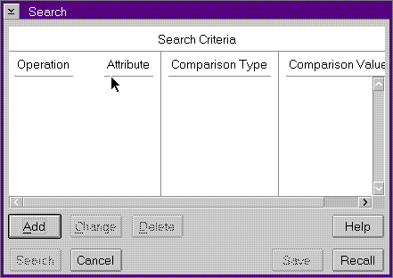
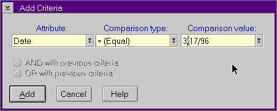

The Search choice uses your search values to select the log entries that are displayed on the Summary window. The Search choice has three associated windows: Search window, Add Criteria dialog, and Change Criteria dialog.
The Search window is a dialog window with fields for you to select, create,
change, and delete search criteria. You can use search values alone (by
specifying OR) or combined (by specifying AND) to provide either specific
or general filtering.
Search Window

Add Criteria Dialog

Use the Add Criteria dialog to add criteria to the search for log entries. Use the three entry fields (Attribute, Comparison Type, and Comparison Value) to construct the criteria. Each entry field has a pull-down list box that contains valid values for the field. You can select an item from the list box, or enter text in the field.
The valid values for the Attribute field are:
The Comparison Type values are the standard OS/2 values. Note that some values may not be valid with certain Attributes. For example, the Greater Than type is not valid with the Directory Name attribute. In this case, the system displays an error message box.
The Comparison Value may not always have a pull-down list box, depending on the Attribute value being selected.
Use the Change Criteria dialog to change the highlighted criteria on the Search window. It is similar to the Add Criteria dialog.